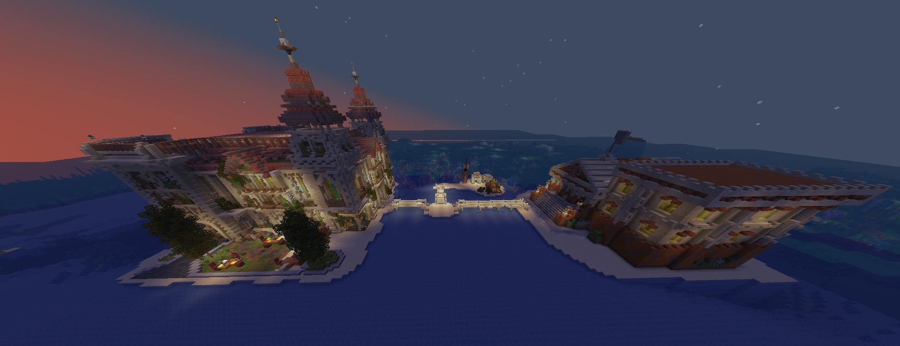
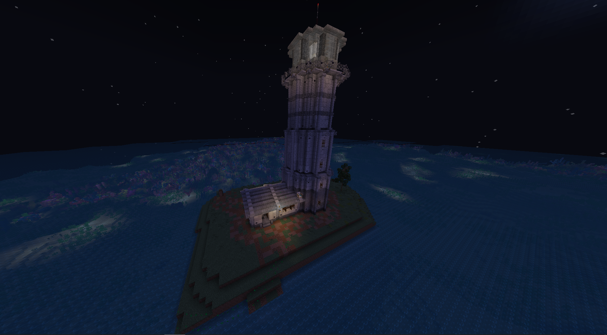

С чего начать
Вы появляетесь в самом сердце мира — в городе на острове, окружённом океаном. Это безопасная стартовая зона, откуда начинается ваш путь.

Спавн: город и острова
Город находится в центре карты и состоит из главного острова и трёх дополнительных островов с домами НПЦ. Здесь вы в безопасности и можете спокойно осмотреться:
На главном острове также расположены станции Инженера и Утилизатора для крафта.
Выход в большой мир
Стоит покинуть центральные острова — и вы выходите из мирной зоны. Если ваша фракция не является мирной, вас ждут самые интересные приключения: схватки с другими фракциями, засады, войны и рейды. Будьте готовы.
Рядом — аванпост Маяк
Недалеко от города находится первый аванпост (РТ) — Маяк. Это точка с самым слабым лутом из всех аванпостов, идеальная для первого опыта захвата. Пока это единственный аванпост; остальные будут появляться по ходу жизни мира.

Первые шаги
- Осмотрите город и острова НПЦ: где контракты, суд и Торговый Центр.
- Решите, кто вы: мирный игрок (строитель и торговец под защитой) или участник боевой фракции.
- Возьмите первые контракты — они дадут ресурсы и направление.
- Выходите в мир, обживайтесь, добывайте ресурсы. Помните: карта 2500×2500, всё рядом.
- Попробуйте захватить аванпост Маяк — лёгкий старт в мир PvP.
Как развиваться
Контракты помогают встать на ноги. Боссы — главный источник сильного снаряжения: с них падают материалы для лучших сетов и оружия, которые собираются на станциях.
Полезное на старте
- Экономика — как торговать (бартер и магазины в ТЦ).
- Суд — что делать при споре или обмане.
- Честная игра — какие моды нужны и какие запрещены.
- Правила и Вопросы и ответы — прочитайте перед конфликтами.